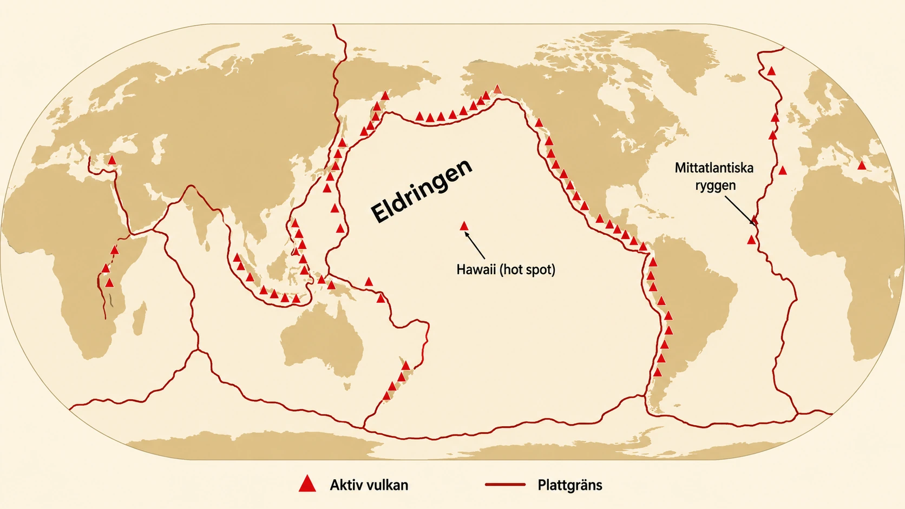
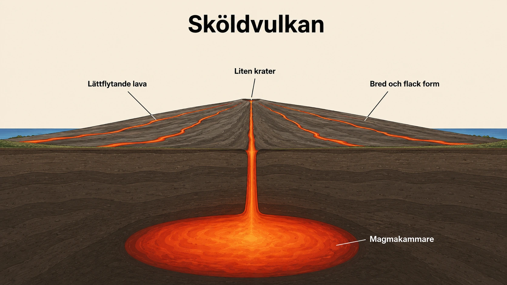
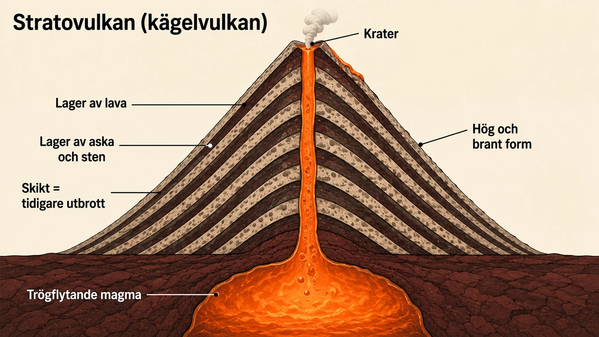
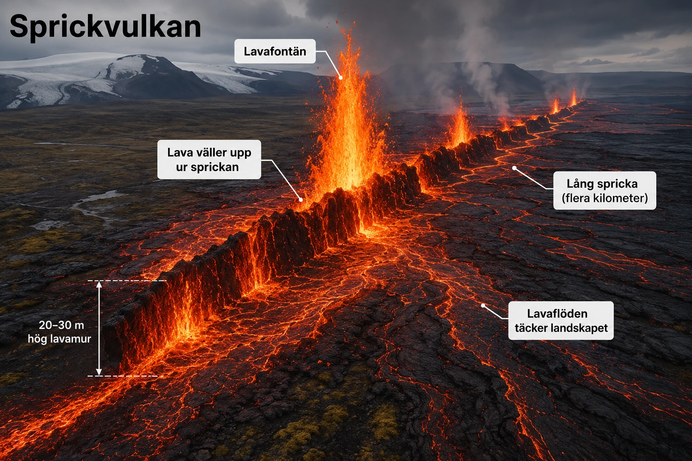
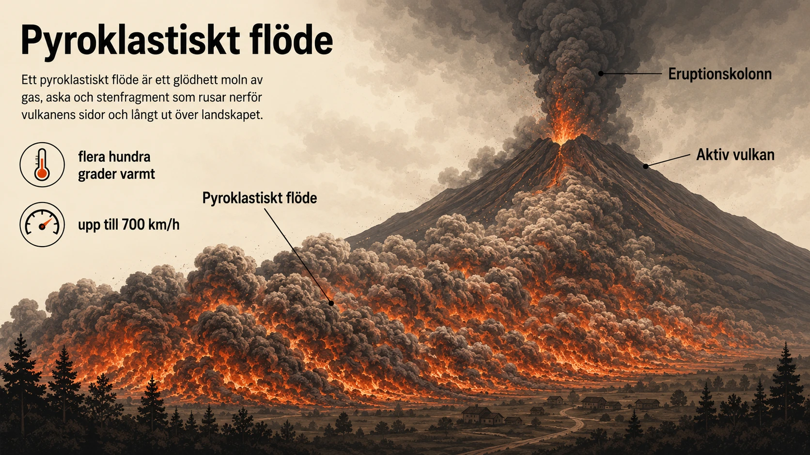

Vulkaner
— när jordens inre tar sig upp till ytan —
Vad är en vulkan?
En vulkan är en öppning i jordskorpan där smält berg kan ta sig upp till ytan. Det smälta berget kallas magma så länge det finns nere i jordens inre eller i jordskorpan. När det når ytan får det ett nytt namn — lava. Ett vulkanutbrott sker när magma, gaser och ofta aska pressas upp genom en öppning eller en spricka i jordskorpan.
Vulkaner är dramatiska, men de är inte slumpmässiga. Precis som jordbävningarna i förra avsnittet följer de tydliga mönster på jordklotet. Om man ritar en karta över världens vulkaner ser man att de samlas i bestämda områden — och att dessa områden ofta sammanfaller med plattgränserna. Det är ingen tillfällighet.
Plattorna och vulkanerna
Jordskorpan är uppdelad i stora plattor som rör sig långsamt — bara några centimeter per år. Rörelserna drivs av värme och långsamma strömmar i manteln djupt nere i jorden. Det är framför allt vid plattgränserna som vulkaner bildas, eftersom jordskorpan där är svagare, spricker eller pressas ner.
Det finns tre platser där vulkaner uppstår. Två av dem ligger vid plattgränser, och en tredje finns mitt på en platta. Tillsammans förklarar de var nästan alla världens vulkaner ligger.

Vulkaner vid spridningszoner
Vid en spridningszon rör sig två plattor bort från varandra. Sprickor bildas mellan dem, och magma från manteln kan stiga upp genom sprickorna och stelna till ny jordskorpa. Detta händer mest på havsbottnen, längs de stora mittoceaniska ryggarna som Mittatlantiska ryggen — vi mötte den i avsnitt 2B.
De flesta spridningszons-vulkaner ligger alltså under havet och syns inte. Men på vissa platser når ryggen upp över havsytan. Den mest kända är Island, som ligger mitt på Mittatlantiska ryggen och är en spridningszon på land. Det är därför Island är en av världens mest vulkanaktiva platser. Lava väller upp ur sprickor, ny mark bildas, och landet växer faktiskt i bredd med några centimeter per år.
Vulkaner vid subduktionszoner
Vid en subduktionszon händer motsatsen — två plattor pressas mot varandra, och den ena (oftast en tung oceanplatta) tvingas ner under den andra. Men subduktionen skapar vulkaner på ett oväntat sätt. När oceanplattan sjunker ner i manteln följer havsvatten och sediment med. Vattnet sänker smältpunkten för bergmassan ovanför, så att den lättare börjar smälta. Då bildas magma som kan stiga upp och bryta igenom plattan ovanför.
Det är så Eldringen runt Stilla havet bildats — den ring av vulkaner och jordbävningar vi pratade om i avsnitt 3. Här finns vulkaner i Japan, Indonesien, Filippinerna, Chile och längs Nordamerikas västkust. Vulkanerna vid subduktionszoner är ofta särskilt explosiva, av en orsak vi ska titta närmare på i nästa underdel — det handlar om vad som händer med magman på vägen upp.
Vulkaner vid hot spots
Inte alla vulkaner ligger vid plattgränser. Vissa bildas mitt på en platta, där det skulle vara helt oväntat enligt plattektoniken vi sett hittills. Sådana vulkaner uppstår vid hot spots — heta punkter.
En hot spot är ett område där ovanligt varmt material från manteln stiger upp som en lång plym mot jordskorpan. Magman som bildas kan bränna sig genom plattan ovanför och skapa vulkaner på en plats som annars inte skulle ha någon vulkanaktivitet.
Hawaii är världens mest kända hot spot. Hawaii-öarna ligger mitt på Stillahavsplattan, långt från alla plattgränser. Men under dem finns en plym av het mantel som har skapat vulkaner i miljontals år. Eftersom Stillahavsplattan rör sig långsamt över den heta punkten, bildas en hel kedja av vulkanöar på rad. Den aktiva vulkanen finns just nu där plattan ligger över hot spoten. De gamla, slocknade öarna ligger längre bort i den riktning som plattan rört sig. Det är som om plattan långsamt skulle ha dragit en linje av vulkanöar bakom sig — och det är precis vad som har hänt.
![Tvärsnitt som visar livscykeln för en hot spot-vulkanö i sex stadier. Längst ner i manteln finns en het mantelplym som står stilla. Ovanför rör sig en tektonisk platta åt vänster. Stadium 1 (längst till höger, just över plymen) är en undervattensvulkan som ännu inte brutit igenom havsytan — den får magma direkt från hot spoten. Stadium 2 har precis kommit över havsnivån som en liten aktiv ö, fortfarande matad av magma. Stadium 3 är den högsta vulkanön i hela bilden — full vuxen och just slocknad, eftersom plattan rört den förbi hot spoten. Vid stadium 4–6 vittrar den slocknade vulkanön gradvis ner, blir lägre och lägre, tills den vid stadium 6 är nästan helt försvunnen under havsytan.](../../img/geologi/hot-spot.webp)
Sammanfattning
Vulkaner finns alltså framför allt på tre platser. Vid spridningszoner, där plattor glider isär och magma stiger upp genom sprickorna. Vid subduktionszoner, där en platta pressas ner och vatten gör att berg smälter på ovansidan. Och vid hot spots, där het mantel tränger upp mitt på en platta. Att vulkaner inte är slumpmässigt utspridda beror på att de speglar plattektonikens stora rörelser. Varje vulkan har en geologisk historia som börjar långt nere i jordens inre.
I nästa underdel ska vi titta på något annat — vulkaner ser inte alla likadana ut. Vissa är låga och breda, andra höga och branta. Varför? Det handlar inte om var de ligger, utan om vad själva magman består av.
Vad är en vulkan?
- En vulkan är en öppning i jordskorpan
- Genom öppningen kan smält berg ta sig upp
- Smält berg nere i jorden kallas magma
- När det når ytan kallas det lava
En vulkan är en öppning i jordskorpan där smält berg kan ta sig upp till ytan. Det smälta berget kallas magma så länge det är nere i jorden. När det når ytan får det namnet lava.
Ett vulkanutbrott sker när magma, gaser och ofta aska pressas upp genom en öppning eller en spricka i jordskorpan.
Vulkanerna följer plattgränserna
- Jordskorpan är uppdelad i stora plattor
- Plattorna rör sig långsamt
- De flesta vulkaner finns vid plattgränserna
- Där är jordskorpan svagare och magma kan ta sig upp
Vulkaner är inte slumpmässigt utspridda. De följer ett tydligt mönster på världskartan. De flesta vulkaner finns nära plattgränserna — där plattorna möts. Där är jordskorpan svagare och magma kan ta sig upp.
Bilden visar var världens vulkaner ligger. Lägg märke till:
- Vulkanerna bildar en ring runt Stilla havet
- Det området kallas Eldringen
- Det finns också vulkaner längs Mittatlantiska ryggen
- Några vulkaner ligger mitt på en platta — som Hawaii
Fundera: Varför ligger så många vulkaner runt Stilla havet?
Spridningszoner — där plattor glider isär
- Vid en spridningszon rör sig plattor bort från varandra
- Då bildas sprickor i jordskorpan
- Magma kan stiga upp genom sprickorna
- Island är en spridningszon på land
Vid en spridningszon glider två plattor bort från varandra. Då bildas sprickor i jordskorpan. Magma kan stiga upp genom sprickorna och stelna till ny jordskorpa.
De flesta spridningszoner ligger under havet, så vi ser dem inte. Men Island ligger mitt på Mittatlantiska ryggen, så där kan man se en spridningszon på land. Det är därför Island har så många vulkaner.
Subduktionszoner — där en platta pressas ner
- Vid en subduktionszon pressas en platta ner under en annan
- När plattan sjunker tar den med sig vatten ner i manteln
- Vattnet gör att berg lättare smälter
- Då bildas magma som stiger upp och skapar vulkaner
- Området kring Stilla havet kallas Eldringen
Vid en subduktionszon pressas två plattor mot varandra. Den ena plattan, oftast en oceanplatta, pressas ner under den andra. När den sjunker ner i manteln tar den med sig vatten. Vattnet gör att berg lättare smälter. Då bildas magma som kan stiga upp och skapa vulkaner.
Det är därför det finns så många vulkaner runt Stilla havet — i Japan, Indonesien, Chile och längs Nordamerikas västkust. Området kallas Eldringen. Vulkaner vid subduktionszoner är ofta extra explosiva.
Hot spots — vulkaner mitt på en platta
- En hot spot är en het punkt i manteln
- Het magma stiger upp mitt under en platta
- Vulkaner kan då bildas långt från plattgränserna
- När plattan rör sig bildas en kedja av vulkanöar
- Hawaii är ett känt exempel
Inte alla vulkaner ligger vid plattgränser. Vid en hot spot stiger ovanligt varm magma upp från djupt nere i manteln. Magman kan bränna sig genom plattan och skapa vulkaner mitt på den.
Hawaii är ett känt exempel. Stillahavsplattan rör sig långsamt över den heta punkten. När plattan rör sig bildas nya vulkanöar i rad. Den aktiva vulkanen finns där plattan just nu ligger över hot spoten. Äldre öar ligger längre bort och är inte längre aktiva.
Sammanfattning
- Vulkaner finns på tre typer av platser
- Spridningszoner — där plattor glider isär
- Subduktionszoner — där en platta pressas ner
- Hot spots — mitt på en platta
Vulkaner är inte slumpmässigt utspridda. De följer plattektonikens stora rörelser. I nästa underdel ska vi titta på olika typer av vulkaner — varför vissa är låga och breda, andra höga och branta.
Magmas resa — från mantel till markyta
När vi i standardtexten sa att "magma stiger upp från manteln" gjorde vi det enkelt. I verkligheten är magmas resa lång, komplex och tar miljontals år. För att förstå vulkaner djupt behöver man förstå vad som händer på vägen.
Magma bildas inte överallt i manteln. Den mesta delen av manteln är inte smält — den är hård, men plastisk, ungefär som en mycket trög deg. För att berget ska smälta krävs något extra. Vid spridningszoner är det tryckavlastning som gör jobbet. När plattorna glider isär minskar trycket på berget nere i manteln, och då sjunker dess smältpunkt. Det är som när en flaska kolsyrad dryck börjar bubbla när man öppnar korken — minskat tryck frigör något som varit hållet på plats.
Vid subduktionszoner är det istället vatten som triggar smältningen. När en oceanplatta sjunker ner i manteln tar den med sig havsvatten som sitter bundet i sprickor och porer. När plattan blir tillräckligt het frigörs vattnet och tränger upp i den varma manteln ovanför. Vatten i het mantel verkar lite som salt på is — det sänker smältpunkten dramatiskt, så att berg som annars hade varit hårt börjar smälta.
Vid hot spots är förklaringen ytterligare en annan. Här tros mantelplymer komma från mycket djupt — kanske från gränsen mellan mantel och kärna, nästan 3 000 kilometer ner. Dessa plymer är ovanligt heta och kan smälta berget på sin väg uppåt utan att behöva varken tryckavlastning eller vatten. Hur djupt plymerna verkligen kommer ifrån är dock ännu inte fullständigt avgjort i forskningen.
När magma väl bildats är den lättare än det fasta berget runt omkring, så den stiger uppåt — långsamt först, sedan snabbare när den närmar sig ytan. Ofta samlas den i magmakammare i den övre jordskorpan, några kilometer ner. Där kan magman ligga kvar i hundratals, tusentals eller till och med miljontals år innan något händer. Den kan svalna och stelna utan att någonsin nå ytan. Eller så kan trycket en dag bli för stort, magmakammaren spricker och magman tränger upp till ytan i ett utbrott. Vilken väg det blir avgör om vi får en vulkan eller bara en gammal stelnad bergmassa under jord.
Varför Island är så speciellt
Island är en av världens mest vulkanaktiva platser. Landet har över 30 aktiva vulkansystem och utbrott inträffar i genomsnitt vart fjärde eller femte år. Men varför just Island? Varför är Island så mycket mer aktivt än till exempel Azorerna eller Sankta Helena, som också ligger på Mittatlantiska ryggen?
Svaret är att Island är något ovanligt — det är samtidigt en spridningszon och en hot spot. Spridningszonen är Mittatlantiska ryggen, som löper rakt genom landet. Den nordamerikanska och den eurasiska plattan rör sig isär här, och Island växer i bredd med ungefär två centimeter per år.
Men under Island finns också en mantelplym — en hot spot som funnits länge på samma plats. Den ger en extra dos av varm magma som stiger upp underifrån. Detta är inte vanligt. På de flesta ställen längs Mittatlantiska ryggen finns ryggen men ingen plym. Då bildas det ny havsbotten i lugn takt, men inga stora vulkanöar växer fram. På Island är det dubbel kraft — både spridning och plym samtidigt. Det är därför ön finns över huvud taget. Utan plymet skulle Island helt enkelt inte ha funnits.
Denna ovanliga kombination förklarar också mycket av Islands vulkanaktivitet. Vid spridningszoner är magman vanligtvis basaltisk och lättflytande. Vid hot spots är den också ofta basaltisk. Det betyder att Islands vulkaner sällan är de mest explosiva som finns. Mestadels får man lavaflöden, sprickutbrott och relativt lugna eruptioner — vilka kan vara förödande men sällan så katastrofala som de stora explosiva utbrotten i Indonesien eller Filippinerna.
Men det finns undantag. När vulkaner på Island ligger under glaciärer — och många gör det — möts hett magma av smältande is, och resultatet kan bli kraftigt explosiva utbrott. Den mest kända i modern tid är Eyjafjallajökull 2010, som inte var särskilt stort i geologisk skala men ändå skapade ett askmoln som stoppade Europas flygtrafik i flera dagar. Det är en sak vi ska komma tillbaka till — det visar att vulkaners farlighet inte alltid handlar om storlek, utan om vem och vad som råkar ligga i vägen.
Vulkaner ser inte likadana ut
Om man ser en bild på Hawaiis Mauna Loa och en bild på Japans Mount Fuji ser man genast något konstigt. Båda är vulkaner. Men de ser totalt olika ut. Mauna Loa är en bred, flack massa som breder ut sig över hela landskapet — den ser mer ut som en jättelik sköld som någon lagt på marken än som ett berg. Mount Fuji är raka motsatsen: en hög, brant kon med en spetsig topp.
Varför ser de så olika ut, trots att båda är vulkaner? Svaret ligger inte i var de ligger — utan i vad själva magman består av. Magmas egenskaper bestämmer både hur vulkanen byggs upp och hur dess utbrott beter sig.
Viskositet — magmas trögflyt
Ett centralt begrepp för att förstå vulkaner är viskositet. Viskositet betyder hur trögflytande något är. Vatten har låg viskositet eftersom det rinner lätt. Honung har hög viskositet eftersom den rinner långsamt. Magma kan på samma sätt vara mer eller mindre trögflytande, och det avgör nästan allt om hur en vulkan beter sig.
Tre saker påverkar magmas viskositet. Den första är temperaturen — varmare magma rinner lättare. Den andra är kiseldioxidinnehållet — ju mer kiseldioxid (SiO₂) magman innehåller, desto trögflytande blir den, eftersom kiseldioxiden bildar långa molekylkedjor som hakar i varandra. Den tredje är gasinnehållet — magma innehåller alltid gaser som vattenånga, koldioxid och svavelföreningar, och dessa kan röra sig lättare i lättflytande magma än i trögflytande.
Dessa tre faktorer hänger ihop på sätt som har stora konsekvenser för utbrottet. I lättflytande magma kommer gaser ut ganska lätt — som luftbubblor i vatten — och utbrottet blir relativt lugnt. I trögflytande magma fastnar gaserna kvar, trycket byggs upp inne i vulkanen, och när det till slut släpper sker utbrottet med explosiv kraft. Det är denna grundläggande skillnad som ger oss de olika vulkantyperna.
Sköldvulkaner — breda och lugna
En sköldvulkan ser nästan ut som en sköld som ligger plant på marken. Vulkanen är bred och flack, med svaga sluttningar som kan sträcka sig dussintals kilometer åt alla håll. Den byggs upp av lättflytande lava som har låg viskositet — lavan rinner långt innan den stelnar, och därför sprider sig vulkanen mer på bredden än på höjden.
Sköldvulkaner har oftast basaltisk magma. Den är het (kanske 1 200 grader), relativt fattig på kiseldioxid och rinner som het sirap. Eftersom gaser har lätt att ta sig ur den lättflytande magman blir utbrotten oftast inte explosiva. Istället ser man långa lavaflöden som glider nerför vulkansidorna, ibland flera kilometer per timme, ibland mycket långsammare. Det betyder inte att sköldvulkaner är ofarliga — lava kan förstöra hus, vägar och odlingsmark — men de brukar inte explodera med kraft.
Hawaii är den klassiska platsen för sköldvulkaner. Mauna Loa är världens största aktiva vulkan räknat efter volym. Från havsbottnen upp till sin topp är den över nio kilometer hög — högre än Mount Everest — men eftersom den är så bred och så långt nere börjar, märks det inte alltid. Den nuvarande mest aktiva vulkanen på Hawaii, Kīlauea, har haft långvariga utbrott som löpt över årtionden.

Stratovulkaner — höga och explosiva
En stratovulkan, som också kallas kägelvulkan, ser ut precis så som de flesta föreställer sig en vulkan — hög, brant och konformad, med en spetsig topp. Ordet "strato" betyder lager, och namnet kommer från att vulkanen byggs upp av många lager av olika material: stelnad lava varvad med lager av aska, sten och vulkaniska bombrester.
Stratovulkaner har oftast trögflytande magma med högt kiseldioxidinnehåll. Magman har svårt att rinna, så den hopar sig istället nära öppningen och bygger vulkanen brant och hög. Och eftersom gaserna inte kommer ut lätt, hålls de instängda i magman tills trycket blir för stort. Då sker explosiva utbrott — ofta med stora askmoln, pyroklastiska flöden och kraftiga eruptioner. Det är just dessa följder vi ska titta närmare på i nästa underdel.
Stratovulkaner finns oftast vid subduktionszoner, där magman ofta får just dessa egenskaper. Mount Fuji i Japan, Vesuvius i Italien och Mount St. Helens i USA är alla stratovulkaner. När man tänker på berömda vulkanutbrott i historien — Vesuvius som förstörde Pompeji år 79, Pinatubo 1991, Mount St. Helens 1980 — handlar det nästan alltid om stratovulkaner.

Sprickvulkaner — utbrott längs en linje
En sprickvulkan är inte en vulkan i den traditionella betydelsen — den har ingen tydlig vulkankägla. Istället kommer lava upp ur en lång spricka i jordskorpan, ofta många kilometer lång. Utbrottet sker längs en linje, inte från en enskild öppning.
Sprickvulkaner är vanliga vid spridningszoner, där jordskorpan redan dras isär och sprickor öppnas naturligt. Island är det klassiska exemplet. Där kan lava komma upp ur sprickor i landskapet, ofta tillsammans med spektakulära "lavafontäner" där het lava kastas upp till tiotals meters höjd. När utbrottet är över har det bildats en lång rad av mindre kratrar längs sprickans linje, ibland med en låg, väggliknande lavavall där det stelnade.
Lavan från sprickvulkaner är oftast lättflytande basaltisk lava, så den kan rinna långt och täcka stora ytor. Om utbrottet är mycket stort kan det få effekter långt bortom själva vulkanen — år 1783 hade Island ett av historiens största sprickutbrott, från sprickan Laki, som spred svaveldioxid över hela Europa och orsakade missväxt och svält i flera år.

Magmas egenskaper avgör allt
Tre vulkantyper, tre helt olika utseenden, tre helt olika beteenden. Och det är inte platsen som är skillnaden — det är magman. Lättflytande, het, gasfattig magma bygger breda sköldvulkaner och ger lugna lavaflöden. Trögflytande, gasrik magma bygger höga stratovulkaner och ger explosiva utbrott. Magma som väller upp ur sprickor, ofta basaltisk, bygger sprickvulkaner som täcker landskap med långa lavaflöden.
Att förstå magmas egenskaper är alltså att förstå vulkaners olika ansikten. Det förklarar varför Mauna Loa och Mount Fuji ser så olika ut, och det förklarar varför vissa vulkaner är farligare än andra. I nästa underdel ska vi titta på exakt vad som kan hända när en vulkan får ett kraftigt utbrott — och varför lava sällan är det farligaste.
Vulkaner ser inte likadana ut
En vulkan på Hawaii och en vulkan i Japan ser helt olika ut. En är låg och bred. En är hög och brant. Varför?
Svaret är inte var de ligger — utan vad själva magman består av. Magmas egenskaper bestämmer hur vulkanen ser ut och hur den beter sig.
Viskositet — hur trögflytande magma är
- Viskositet betyder hur trögflytande något är
- Vatten har låg viskositet — det rinner lätt
- Honung har hög viskositet — den rinner långsamt
- Magma kan vara mer eller mindre trögflytande
Viskositet är ett ord som betyder hur trögflytande något är. Vatten har låg viskositet eftersom det rinner lätt. Honung har hög viskositet eftersom den rinner långsamt.
Magma kan också vara mer eller mindre trögflytande. Det beror på hur het magman är, hur mycket kiseldioxid den innehåller och hur mycket gaser den har. När magman är trögflytande har gaserna svårt att ta sig ut, och då kan utbrottet bli explosivt.
Sköldvulkaner — breda och flacka
- En sköldvulkan är bred och flack
- Den ser ut som en sköld på marken
- Lavan är lättflytande och rinner långt
- Utbrotten är oftast inte explosiva
- Hawaii är ett känt exempel
En sköldvulkan är bred och flack. Den ser nästan ut som en sköld som ligger på marken. Den byggs upp av lättflytande lava som rinner långt innan den stelnar.
Eftersom gaserna lätt kommer ut ur den lättflytande lavan blir utbrotten oftast inte explosiva. Lavan rinner i långa flöden nerför vulkanen. Det är inte ofarligt — lava kan förstöra hus, vägar och odlingsmark — men det är inte samma sak som en explosion.
Hawaii är ett känt område med sköldvulkaner. Mauna Loa är världens största aktiva vulkan.
Lägg märke till:
- Vulkanen är mycket bredare än den är hög
- Sluttningarna är flacka, inte branta
- Lavan rinner långt nerför sidorna
Stratovulkaner — höga och branta
- En stratovulkan är hög och brant
- Den byggs upp av många lager — lava, aska, sten
- Magman är trögflytande och håller kvar gaser
- Utbrotten kan bli mycket explosiva
- Mount Fuji och Vesuvius är exempel
En stratovulkan är hög, brant och konformad. Ordet "strato" betyder lager. Vulkanen byggs upp av många lager av lava, aska och sten — det är därför de syns som ränder om man skulle skära igenom vulkanen.
Stratovulkaner har trögflytande magma. Magman innehåller mer kiseldioxid och håller kvar mycket gas. När gaserna inte kommer ut lätt byggs ett högt tryck upp inne i vulkanen. Till slut kan trycket bli så stort att vulkanen exploderar.
Därför är stratovulkaner ofta farligare än sköldvulkaner. De kan skapa stora askmoln och kraftiga explosioner. Mount Fuji i Japan, Vesuvius i Italien och Mount St. Helens i USA är alla stratovulkaner.
Lägg märke till:
- Vulkanen är hög och brant, med en spetsig topp
- Inuti syns tydliga skikt — varvad lava och aska
- Skikten visar att vulkanen byggts upp av många utbrott
Fundera: Varför just lager? Vad berättar de om vulkanens historia?
Sprickvulkaner — utbrott längs en linje
- En sprickvulkan har ingen vanlig vulkankägla
- Lava kommer upp ur en lång spricka i marken
- Utbrottet sker längs en linje, inte från en punkt
- Sprickvulkaner är vanliga på Island
En sprickvulkan är annorlunda. Den har ingen tydlig vulkankägla. Istället kommer lava upp ur en lång spricka i jordskorpan. Utbrottet sker längs en linje, inte från en enskild öppning.
Sprickvulkaner finns oftast vid spridningszoner, där jordskorpan redan dras isär. Island är det klassiska exemplet. Där kan lava komma upp ur sprickor och bilda en låg mur — kanske 20-30 meter hög — av het, glödande lava längs sprickans linje.
Magmas egenskaper avgör allt
- Magmas egenskaper bestämmer hur vulkanen beter sig
- Lättflytande magma → lugna lavaflöden
- Trögflytande magma → explosiva utbrott
- Det är inte var vulkanen ligger som avgör — det är magman
Det är alltså inte platsen som avgör hur farlig en vulkan är. Magmas egenskaper är viktigast. Lättflytande, het magma ger lugna lavaflöden. Trögflytande, gasrik magma ger explosiva utbrott.
I nästa underdel ska vi titta på vad som kan hända vid ett kraftigt vulkanutbrott — och varför lava sällan är det farligaste.
VEI — så mäter man vulkanutbrott
I förra avsnittet såg vi att jordbävningar mäts på flera skalor — Richterskalan, momentmagnitudskalan, Mercalliskalan. Vulkaner har en motsvarighet. Den kallas VEI — Volcanic Explosivity Index, alltså vulkanisk explosivitetsindex. Det är ett sätt att jämföra utbrotts kraft på samma sätt som magnitudskalan jämför jordbävningar.
VEI är en skala från 0 till 8. Den bygger på två huvudsakliga saker — hur mycket material som kastas ut, och hur högt askmolnet når. VEI 0 är ett icke-explosivt utbrott med mestadels lugna lavaflöden, av samma typ som många sköldvulkaner på Hawaii ofta producerar. VEI 2 är ett mindre explosivt utbrott — så kraftigt att det märks lokalt men inte påverkar regionen. VEI 4 är ett stort utbrott som kan ha allvarliga konsekvenser för flera länder. Och VEI 8 är ett superutbrott — vi kommer återkomma till sådana i en djupdykning.
Precis som magnitudskalan är VEI logaritmisk. Mellan VEI 4 och VEI 5 är skillnaden tio gånger så mycket material. Mellan VEI 5 och VEI 6, ytterligare tio gånger. Det betyder att skillnaden mellan ett VEI 4-utbrott och ett VEI 7-utbrott är tusenfaldig. När forskare jämför vulkanutbrott i historien är VEI ett av de viktigaste verktygen för att förstå deras omfattning.
Några exempel hjälper att förstå skalan. Vesuvius-utbrottet år 79 e.Kr. som förstörde Pompeji var ungefär VEI 5. Mount St. Helens-utbrottet 1980 var också VEI 5. Krakatau 1883 var VEI 6. Tambora i Indonesien 1815, som ledde till "året utan sommar" 1816 över hela norra halvklotet, var VEI 7. Och Tobas superutbrott för 74 000 år sedan var VEI 8 — det största kända vulkanutbrottet i de senaste två miljonerna år.
VEI fångar dock inte hela bilden. Den säger inget om hur farligt utbrottet blev för människor, för den beror också på var vulkanen ligger, hur många som bor i närheten och vilka följdkatastrofer som inträffar. Ett VEI 4-utbrott vid en folktät vulkan kan döda fler människor än ett VEI 6-utbrott på en obebodd ö. Precis som med jordbävningar behöver man både en "fysisk" mätning och en "konsekvens"-bedömning för att förstå katastrofen i sin helhet.
Eyjafjallajökull 2010 — när en liten vulkan stoppade en kontinent
Den 14 april 2010 började en vulkan på Island som heter Eyjafjallajökull få ett utbrott. Det var inte ett särskilt stort utbrott i geologiska termer — bara VEI 4, mindre än Mount St. Helens 1980. Det dödade ingen direkt. Det förstörde ingen större by. På den globala vulkanlistan var det inte alls anmärkningsvärt.
Ändå blev Eyjafjallajökull en av 2000-talets mest berömda naturhändelser. I sex dagar var stora delar av Europas flygtrafik stillastående. Hundratals flygplatser stängdes. Tio miljoner passagerare blev strandsatta. Företag förlorade flera miljarder. Och allt detta från en relativt liten vulkan på en glesbefolkad ö i Nordatlanten.
Hur kan en liten vulkan ha så stora konsekvenser? Svaret ligger i en kombination av faktorer. Eyjafjallajökull ligger under en glaciär. När magman bröt upp genom isen smälte den enorma mängder vatten, och det heta mötet mellan magma och vatten orsakade explosiv ångbildning. Det krossade lavan till mycket fin vulkanisk aska — partiklar mindre än en hundratusendels meter i diameter. Sådan aska är inte särskilt farlig för människor på marken, men för flygplansmotorer är den dödlig. Askpartiklar smälter i den heta luften inuti en jetmotor och kan stelna i bladen och stoppa hela motorn på sekunder.
Sedan kom vinden in i bilden. Eyjafjallajökull ligger så att de typiska sydostliga vindarna under våren bär askmolnet rakt mot Europa. Och askan steg så högt att den hamnade i de luftskikt där moderna flygplan flyger. Resultatet blev en askridå som täckte stora delar av Europa i flera dagar.
Det är en lärorik historia. Vulkanens egenskaper i sig var inte ovanliga — det var en relativt lugn utbrott av en medelstor vulkan. Men kombinationen av glaciär (vatten + magma = fin aska), vindar (askan transporterades till en kontinent med massor av flygtrafik) och modern samhällsstruktur (vi är extremt beroende av flyg) gjorde händelsen oerhört kostsam.
Detta knyter samman vad vi sett i hela kapitlet. En naturkatastrofs storlek bestäms aldrig av naturen ensam. Den bestäms av mötet mellan natur och samhälle — av vad som råkar ligga i vägen, hur många människor och hur mycket infrastruktur som är sårbar. Eyjafjallajökull 2010 var ett relativt litet vulkanutbrott, men i en värld byggd för snabb global rörelse blev det en händelse alla kommer att minnas. Naturen och samhället möts, och därifrån räknas konsekvenserna.
Det farligaste är sällan lavan
När människor tänker på en vulkan tänker de ofta först på lava — glödhet, smält sten som rinner nerför vulkansidan. Lava är dramatisk att se på, och den kan förstöra hus, vägar, skog och odlingsmark. Men lava är sällan det som dödar flest människor vid ett vulkanutbrott. Lava rör sig oftast ganska långsamt — människor hinner fly. De farligaste följderna av vulkanutbrott är andra: pyroklastiska flöden, slamströmmar, aska, giftiga gaser och ibland klimatpåverkan.
Det är precis som med jordbävningarna i avsnitt 3 — själva grundhändelsen är ofta inte det värsta. Det är följdkatastroferna. För att förstå vulkaner som risk för människor behöver man förstå dessa olika typer av faror, för det är dem ett samhälle behöver förbereda sig mot.
Pyroklastiska flöden
Ett pyroklastiskt flöde är en av de farligaste naturhändelser som överhuvudtaget kan uppstå. Det är en glödhet blandning av gas, aska och sten som rusar nerför en vulkans sluttning i mycket hög hastighet. Ett pyroklastiskt flöde kan vara flera hundra grader varmt och röra sig snabbare än en bil på motorvägen — ibland 700 kilometer i timmen.
Människor som hamnar i ett pyroklastiskt flödes väg har nästan ingen chans att överleva. Det är inte bara värmen som dödar. Det är också kvävning från gaser, tryckvågor som river hus, och tonvis med fallande sten och aska. Allt detta tillsammans, på sekunder.
Det berömdaste exemplet är staden Pompeji som förstördes när Vesuvius fick utbrott år 79 e.Kr. Människor dog där inte främst av lava — de dog av het aska och pyroklastiska flöden som svepte över staden. Många begravdes så snabbt att de stelnade i de positioner de dog i, och tomrum bildades senare i lavorna som dagens arkeologer kunde fylla med gips och göra avgjutningar av.

Slamströmmar — lahars
En annan mycket farlig följd är slamströmmen, som också kallas lahar efter ett indonesiskt ord. En lahar uppstår när vulkanisk aska och löst material blandas med vatten. Vattnet kan komma från flera ställen — kraftigt regn, smält snö, smält glaciäris på vulkantoppen, eller vatten från en kratersjö.
Resultatet är en strömmande, cementliknande lera som rusar nerför vulkanens dalgångar och kan begrava allt i sin väg. Hus, vägar, broar, fält och människor täcks av en tjock, snabbt stelnande massa. Och här finns något särskilt farligt: lahars kan färdas långt från själva vulkanen. Människor som bor i dalar tiotals kilometer från kratern kan drabbas, även om vulkanen själv är långt borta.
En av historiens värsta laharkatastrofer inträffade i Colombia 1985. Vulkanen Nevado del Ruiz fick ett utbrott som smälte glaciärisen på toppen. Den resulterande slamströmmen rusade nerför floddalen och begravde staden Armero. Över 23 000 människor dog — de flesta utan att veta att vulkanen ens varit i utbrott.
Vulkanisk aska
Vulkanisk aska är inte som askan från en brasa. Den består av mycket små, vassa bitar av sten och vulkaniskt glas. Den kan irritera ögon, hud och lungor — för människor med astma eller andra andningsproblem kan den vara livsfarlig.
Aska kan också vara förödande på andra sätt. Om asklagret blir tjockt och tungt — särskilt om det blandas med regn — kan tak rasa in. Aska kan förstöra dricksvatten, täcka odlingsmark och döda boskap. Den kan stoppa flygtrafiken över hela kontinenter, eftersom askpartiklar kan smälta i jetmotorers heta delar och stoppa motorn på sekunder. Det var detta som hände när Eyjafjallajökull stoppade Europas flyg 2010 — som vi nämnde i avsnitt 4B.
Det som gör askan särskilt svår att hantera är att den kan färdas mycket långt. Höga vulkanutbrott skickar aska kilometer upp i atmosfären, där vindarna sprider den hundratals eller tusentals kilometer. Ett utbrott i Indonesien kan ge asknedfall i Australien några dagar senare.
Giftiga gaser
Vulkaner släpper ut stora mängder gaser — främst vattenånga och koldioxid, men också svaveldioxid och andra giftiga föreningar. Svaveldioxid irriterar luftvägarna och kan bidra till surt regn. Koldioxid är farlig på ett mer lurigt sätt: den är tyngre än luft och kan samlas i låga områden som källare, dalgångar och brunnar. Människor och djur kan kvävas där utan att märka faran i tid.
Ett av historiens märkligaste exempel är Lake Nyos i Kamerun 1986. En vulkanisk kratersjö hade samlat på sig stora mängder koldioxid under många år. En natt frigjordes plötsligt ett gasmoln från sjön — och eftersom koldioxid är tyngre än luft rann molnet nedför dalsluttningarna som en osynlig flod. Över 1 700 människor och tusentals djur dog i sömnen, kvävda i sina hem. Vulkanism kan vara dödlig även utan utbrott.
Klimatpåverkan
Stora vulkanutbrott kan påverka klimatet under månader eller år. När mycket svaveldioxid når stratosfären — det luftskikt som ligger ovanför vädret — bildas små partiklar som reflekterar bort solljus. Då når mindre solenergi jordytan, och temperaturen sjunker tillfälligt.
Tambora-utbrottet i Indonesien 1815 var så kraftigt att hela följande år, 1816, kallades "året utan sommar" på norra halvklotet. Snö föll i juni i delar av Europa och Nordamerika. Skördar slog fel. Människor svalt. Det var en av de hårdaste klimatkatastrofer i modern tid — men den var helt naturlig, orsakad av en enda vulkan på andra sidan jorden.
Det är värt att hålla isär detta från dagens långsiktiga klimatförändring. Vulkanisk klimatpåverkan är kortvarig — partiklarna faller ner ur atmosfären efter månader eller år, och temperaturen återhämtar sig. Långsiktig uppvärmning genom utsläpp av växthusgaser är något annat. Men vulkaner visar att klimatet är känsligt för förändringar i atmosfären, och att även en kortvarig påverkan kan få stora följder för människor.
Vad dödar egentligen?
När man räknar samman alla vulkankatastrofer i mänsklighetens historia är slutsatsen tydlig. Det som dödar flest människor vid vulkanutbrott är inte lava. Det är pyroklastiska flöden vid Vesuvius, lahars vid Nevado del Ruiz, kvävande gas vid Lake Nyos, tsunamier från kollapsande vulkanöar som Krakatau, asknedfall som täcker odlingsmark och svält som följer. Det är följdkatastrofer, inte den heta lavan själv.
Det är därför vulkanrisk inte är en enkel sak att förbereda sig för. Det är många olika typer av faror, var och en med sin egen logik. Och varje vulkan har sin egen blandning beroende på var den ligger, vilken sorts magma den har, och vad som omger den. I nästa underdel ska vi titta på den fullständiga bilden — för vulkaner är inte bara faror. De är också resurser som människor faktiskt vill bo nära.
Det farligaste är sällan lavan
När man tänker på en vulkan tänker man oftast på lava. Lava är glödhet och dramatisk. Den kan förstöra hus, vägar och åkrar.
Men lava är sällan det som dödar flest människor. Lavan rör sig oftast ganska långsamt — människor hinner fly. De farligaste sakerna är andra: pyroklastiska flöden, slamströmmar, aska och giftiga gaser.
Pyroklastiska flöden — det farligaste
- Ett pyroklastiskt flöde är en blandning av gas, aska och sten
- Det är flera hundra grader varmt
- Det rusar nerför vulkanen snabbare än en bil
- Människor i dess väg har nästan ingen chans
Ett pyroklastiskt flöde är en glödhet blandning av gas, aska och sten som rusar nerför vulkanens sluttning. Det kan vara flera hundra grader varmt och röra sig fortare än en bil på motorvägen.
Det är en av de farligaste naturhändelserna som finns. Det är inte bara värmen som dödar — det är också gas som kväver och tryckvågor som river hus. Allt på sekunder.
Det berömdaste exemplet är staden Pompeji i Italien. När Vesuvius fick utbrott år 79 e.Kr. dog de flesta inte av lava. De dog av het aska och pyroklastiska flöden som svepte över staden.
Lägg märke till:
- Molnet rör sig nerför vulkansidan
- Det är ljusgrått-svart med orange glöd inuti
- Molnet rusar fram nära marken, inte uppåt
Fundera: Varför är det så farligt om molnet rör sig nära marken?
Slamströmmar — lahars
- En slamström kallas också lahar
- Det är vulkanisk aska blandad med vatten
- Vattnet kan komma från regn, smält snö eller smält glaciäris
- En lahar kan färdas långt från vulkanen
En slamström uppstår när vulkanisk aska blandas med vatten. Vattnet kan komma från kraftigt regn, smält snö, smält glaciäris på vulkantoppen eller från en kratersjö.
Resultatet blir en flod av cementliknande lera som rusar nerför vulkanens dalgångar. Den kan begrava hus, vägar och människor. Och den kan färdas långt från själva vulkanen — människor långt borta kan drabbas.
I Colombia 1985 smälte vulkanen Nevado del Ruiz glaciärisen på sin topp. Lahaerna som följde begravde staden Armero. Över 23 000 människor dog.
Aska
- Vulkanisk aska är inte som vanlig aska — det är små vassa stenar
- Askan kan skada lungor och göra människor sjuka
- Tjock aska kan få tak att rasa
- Aska kan stoppa flygtrafiken
- Den kan färdas hundratals kilometer med vinden
Vulkanisk aska är inte som askan från en brasa. Den består av mycket små, vassa bitar av sten och vulkaniskt glas. Den kan irritera ögon, hud och lungor.
Om asklagret blir tjockt kan tak rasa in. Askan kan också förstöra dricksvatten, döda boskap och stoppa flygtrafiken — askpartiklar kan skada flygplansmotorer.
Det som är speciellt med aska är att den kan färdas mycket långt. Höga vulkanutbrott skickar aska kilometer upp i atmosfären, där vinden sprider den hundratals eller tusentals kilometer.
Giftiga gaser
- Vulkaner släpper ut gaser som svaveldioxid och koldioxid
- Svaveldioxid irriterar luftvägarna
- Koldioxid är tyngre än luft och kan samlas i låga områden
- Människor kan kvävas utan att märka det
Vulkaner släpper ut stora mängder gaser. Svaveldioxid irriterar luftvägarna. Koldioxid är farlig på ett särskilt sätt — den är tyngre än luft och kan samlas i källare, dalar och brunnar utan att synas.
Vid Lake Nyos i Kamerun 1986 frigjordes ett gasmoln från en kratersjö. Eftersom koldioxiden var tyngre än luft rann molnet nedför dalen som en osynlig flod. Över 1 700 människor dog i sömnen.
Klimatpåverkan
- Stora vulkanutbrott kan tillfälligt kyla ned jorden
- Svaveldioxid i höga luftlager reflekterar bort solljus
- Mindre solljus = lägre temperatur
- Effekten varar bara några år, men kan vara förödande för skördar
Stora vulkanutbrott kan påverka klimatet. När mycket svaveldioxid når höga luftlager bildas små partiklar som reflekterar bort solljus. Då blir temperaturen lägre på jorden.
Tambora-utbrottet i Indonesien 1815 var så kraftigt att hela året 1816 kallades "året utan sommar". Snö föll i juni i Europa. Skördar slog fel och människor svalt.
Vad dödar egentligen?
- Lava dödar sällan flest människor
- De största farorna är pyroklastiska flöden, lahars, aska, gaser
- Också svält efter förstörda skördar dödar många
- Olika vulkaner har olika faror
Det som dödar flest människor vid vulkanutbrott är alltså inte lavan. Det är följderna — pyroklastiska flöden, lahars, gaser, asknedfall och svält som följer av förstörda skördar.
I nästa underdel ska vi titta på den hela bilden. Vulkaner är inte bara farliga — de är också resurser. Det är därför människor bor nära dem.
Pompeji 79 e.Kr. — vad människor upplevde
Den 24 augusti år 79 e.Kr. inträffade en av historiens mest berömda vulkankatastrofer. Vesuvius, vulkanen nära Neapel i nuvarande Italien, fick ett kraftigt utbrott. Två romerska städer — Pompeji och Herculaneum — förstördes och begravdes. Tusentals människor dog. Och en av dem som överlevde, en ung romersk advokat vid namn Plinius den yngre, skrev senare ner vad han hade sett. Det är den första detaljerade ögonvittnesskildring vi har av ett vulkanutbrott.
Plinius var sjutton år och befann sig i staden Misenum, ungefär 30 kilometer från Vesuvius. Tidigt på eftermiddagen såg han ett underligt moln resa sig från vulkanen. Han beskrev det som en pinjeträdsform — en hög, smal stam med en bred krona på toppen. Detta är vad vulkanforskare idag kallar en plinisk eruptionskolonn, döpt efter just Plinius. En sådan kolonn kan nå tjugo eller trettio kilometer rakt upp i atmosfären, hejdad bara av stratosfären.
I Pompeji föll aska och små lavabitar — så kallade lapilli — i tjocka lager. Människor i staden trodde först att de skulle överleva. De stannade i sina hus och försökte täppa till fönster. Men askan blev allt djupare. Tak började rasa under tyngden. Människor som flydde mot stranden hindrades av de heta klipporna som föll från himlen.
Sedan kom det verkligt dödliga. Strax efter midnatt började eruptionskolonnen kollapsa över sig själv. Istället för att gå rakt upp föll den tillbaka mot marken, och det heta materialet sköljde nerför vulkanen som glödheta moln av gas, aska och sten — pyroklastiska flöden. De första nådde Herculaneum först, sedan, mot morgonen, Pompeji. Människor som flydde dog i sina spår.
Det märkliga med Pompeji är att vi nästan kan se ögonblicket. Askan var så fin att den fyllde varje sprick, varje skrymsle. När människor begravdes och deras kroppar långsamt förmultnade lämnade de tomrum i den stelnande askan. Arkeologer som grävde fram staden under 1800-talet upptäckte detta och kom på en teknik: de fyllde tomrummen med flytande gips, lät det stelna, och kunde sedan gräva fram exakta avgjutningar av människorna som dog. Idag står dessa gipsfigurer som en av historiens mest gripande bilder — människor i sina sista sekunder, kurade, omfamnande, gråtande, andande i sin sista andetag.
Plinius den äldre, den ungre Pliniuses morbror, dog under utbrottet. Han var en känd naturforskare och flotttast på den närliggande örlogsbasen. När utbrottet började gav han order om att fartyg skulle skickas för att rädda människor från kusten. Han for själv över viken — och dog under räddningsförsöket, troligen av asthmaanfall eller hjärtsvikt utlöst av de vulkaniska gaserna. Hans brorson skrev senare hans berättelse, och det är därför vi idag har detaljerad kunskap om vad som hände.
Pompeji blev under 1700- och 1800-talen Europas mest besökta arkeologiska plats. Den lärde generationer av européer hur en romersk stad faktiskt såg ut — och påminde dem om hur snabbt en katastrof kan ändra allt. Vulkanen är fortfarande aktiv. Idag bor över tre miljoner människor i en cirkel kring Vesuvius. Vad som hände i Pompeji kan hända igen.
Armero 1985 — när en lahar skapade en av historiens värsta vulkankatastrofer
Den 13 november 1985 inträffade en av modern tids värsta naturkatastrofer i Colombia — och få har hört talas om den. Det handlar inte om en stor jordbävning eller en tropisk storm. Det handlar om en lahar.
Vulkanen Nevado del Ruiz ligger i Anderna, ungefär 130 kilometer nordväst om Bogotá. Den är en hög stratovulkan med en permanent glaciär på toppen. Vulkanen hade haft mindre aktivitet i månader före katastrofen — små utbrott, gasutsläpp, små jordbävningar. Forskare hade varnat för att en lahar kunde inträffa. Detaljerade riskkartor hade tagits fram. Men varningarna nådde inte fram i tid till alla, och vissa lokala myndigheter förmedlade dem inte vidare av rädsla för att skapa panik.
På kvällen den 13 november fick vulkanen ett kraftfullare utbrott — fortfarande inte ett gigantiskt utbrott i absolut skala, bara VEI 3. Men det var nog för att smälta delar av glaciären på toppen. Smältvattnet blandades med lös vulkanisk aska och stenmaterial och förvandlades till en flod av cementliknande lera. Floden rusade nerför vulkanens dalgångar, växte i storlek när den drog med sig mer material längs vägen, och nådde en hastighet av över 60 km/h.
Två och en halv timme efter utbrottet nådde laharen staden Armero, som låg vid mynningen av en floddal nedanför vulkanen. Det var natt. De flesta sov. Inom minuter begravdes staden under upp till fem meter lera. Av Armeros 28 000 invånare överlevde mindre än 5 000. Över 23 000 människor dog — en del omedelbart, andra fastnade i leran och avled under timmarna och dagarna som följde, innan räddningspersonal kunde nå dem.
Den mest gripande bilden från Armero blev en ung flicka vid namn Omayra Sánchez. Hon var tretton år och fast i lera med båda benen instängda under sammanrasade byggdelar. Räddningspersonal försökte i tre dagar att frigöra henne, men utan tung utrustning gick det inte. Hon pratade med journalister, hälsade till sin mamma, bad räddningsarbetarna att hälsa till sin skola. Sedan dog hon, omgiven av människor som inte kunde rädda henne. Hennes ansikte syns på en av 1900-talets mest kända fotografier.
Armero blev en lektion i flera saker. För det första: lahars kan vara dödligare än större vulkanutbrott. Den 1985-utbrottet av Nevado del Ruiz var inte särskilt stort. Men vatten + aska + människor i en floddal nedanför = katastrof. För det andra: varningar fungerar bara om de når fram och om människor handlar på dem. Forskarna hade förutsett vad som kunde hända. Riskkartorna stämde nästan exakt med var laharen sedan färdades. Men varningssystemen var inte tillräckligt robusta för att rädda staden. Och för det tredje: lahars kan färdas snabbt och långt — Armero låg cirka 50 kilometer från vulkanen. Människorna där visste knappast att vulkanen ens hade fått ett utbrott.
Idag finns ett bättre varningssystem för Nevado del Ruiz, och liknande system har byggts upp vid andra glaciärvulkaner runt om i världen — Cotopaxi i Ecuador, Rainier i USA, många i Japan. Armero blev påminnelsen om att lahars är en av vulkanismens mest underskattade dödsorsaker, och att förebyggande arbete är värt insatsen. Stadens ruiner ligger fortfarande där, övervuxna av djungelvegetation, som ett minnesmärke över vad som kan hända när en relativt liten vulkan möter ett sårbart samhälle.
Det dubbla ansiktet
Av det vi sett hittills skulle man kunna dra slutsatsen att vulkaner är en ren plåga för människor. De kan döda, förstöra hem, begrava städer, förgifta luft och vatten, fördärva skördar, påverka klimatet. Vem skulle vilja bo nära en vulkan?
Och ändå — runt världens vulkaner ligger några av jordens tätast befolkade områden. Indonesien har över 270 miljoner invånare och hundratals aktiva vulkaner. Japan, Filippinerna, Mellanamerika, Italien — alla har stora befolkningar nära vulkaner. Inte trots vulkanerna. Ofta tack vare dem. För vulkaner har också ett annat ansikte. De är inte bara fara — de är också resurs. Att förstå vulkaner är att förstå denna dubbla natur.
De negativa konsekvenserna
De negativa konsekvenserna av vulkaner är dem vi redan sett i 4C. Människor kan dö eller skadas av pyroklastiska flöden, lahars, gaser, asknedfall och svält. Vulkanutbrott kan förstöra bostäder, infrastruktur och hela städer — som Armero, Pompeji eller Plymouth på Montserrat (som nästan helt övergavs efter ett utbrott på 1990-talet). Det kan slå ut jordbruk genom asknedfall på åkrar och förgiftat vatten. Det kan skada ekonomin långt bortom själva vulkanen genom flygstopp och avbruten handel. Och i de allra största fallen kan det till och med påverka klimatet och därmed människor över hela jordklotet.
Allt detta är verkligt. Vulkanrisker ska inte avskrivas. Men det är bara halva bilden.
Bördig jord
Den största enskilda anledningen till att människor bor nära vulkaner är jorden. Vulkanisk aska och lava som vittrar sönder skapar med tiden mycket bördig jord. Den innehåller mineraler som växter behöver — kalium, kalcium, magnesium, fosfor och järn. På få andra platser i världen är jorden så naturligt rik.
Det är därför vulkanlandskap är några av jordens viktigaste jordbruksområden. Italiens vingårdar på Vesuvius sluttningar producerar berömda viner. Indonesiens vulkaniska öar har bördiga risodlingar som mättar miljoner människor. Centralamerika odlar kaffe på vulkaniska sluttningar — många av världens bästa kaffe kommer från sådana områden. Hawaii har frukt och socker. Filippinerna och Japan har ris. Lista nästan vilket vulkanland som helst, och du hittar omfattande jordbruk på dess sluttningar.
För människor som lever av jorden är detta avgörande. En vulkanutbrott vart femhundrade år är en katastrof, ja. Men under de fyrahundranittio andra åren är jorden där en daglig gåva som föder familjer, byar och samhällen. Den korta katastrofen vägs upp av den långa fördelen.
Geotermisk energi
I vulkanområden är jordens inre värme ovanligt nära ytan. Den värmen kan användas. Geotermisk energi är när man tar vara på naturligt het vatten och ånga från marken för att producera el eller värma upp byggnader.
Island är världens mest spektakulära exempel. Nästan all el i Island kommer från geotermisk energi eller vattenkraft. Nästan alla hus värms upp med varmt vatten direkt från marken. Reykjavik har inga skorstenar — bara rör som leder geotermiskt vatten in i husen. För Island är vulkanismen inte bara fara — den är hela energi-infrastrukturen.
Andra länder gör samma sak i mindre skala. Kalifornien, Italien, Nya Zeeland, Filippinerna och Kenya har alla utvecklat geotermisk el. För att klimatfrågan blir allt viktigare kommer geotermisk energi sannolikt att växa — det är en av få energikällor som är förnybara, koldioxidsnåla och oberoende av väder eller årstid.
Mineraler och andra resurser
Vulkaniska processer skapar också värdefulla mineraler och metaller. När magma stelnar och rör sig genom berget kan olika ämnen koncentreras till tillgängliga fyndigheter. Koppar, guld, silver, svavel och flera andra metaller utvinns i vulkaniska områden världen över.
Andesernas vulkanbälte — Chile, Peru, Bolivia — är världens viktigaste kopparproducent. Indonesien och Filippinerna har stora guld- och koppartillgångar i samband med sina vulkaner. Italien har länge utvunnit svavel från vulkaniska området kring Sicilien. För många av dessa länder är gruvdriften en av de viktigaste exportindustrierna — och allt detta har sitt ursprung i vulkanaktiviteten.
Turism och kunskap
Vulkaner attraherar också människor på andra sätt. Turister reser för att se vulkaniska landskap, gejsrar, lavafält och dramatiska berg. Island får varje år miljoner besökare som vill uppleva landskapet. Hawaii lockar turism till sina aktiva vulkaner. Yellowstone i USA, Mount Fuji i Japan, Vesuvius och Etna i Italien — alla är stora turistmål. Denna turism skapar jobb och inkomster för lokala samhällen.
Och så finns det vetenskaplig kunskap. Vulkaner är några av jordens viktigaste naturliga laboratorier. Genom att studera dem kan forskare förstå jordens inre, plattektonikens processer, klimatet och hur naturkatastrofer kan förutsägas. Den kunskapen kommer tillbaka som bättre varningssystem, säkrare byggnormer och ökad förståelse för vår planet.
Sårbarhet möter resurs
Det är här vulkaner blir intressanta som geografiskt fenomen. De är samtidigt fara och resurs. Och människors val att bo nära vulkaner är en avvägning mellan de två. De positiva effekterna — bördig jord, geotermisk energi, mineraler — märks varje dag. De negativa effekterna — utbrotten, lahars, askmoln — sker sällan, kanske bara vart hundrade eller femhundrade år. Människor accepterar därför risken, ofta på goda grunder.
Men avvägningen är inte enkel. När ett utbrott väl inträffar kan följderna bli förödande. Den långa fördelen kan utplånas på en dag. Det är därför vulkanforskning är så viktig — inte för att kunna stoppa vulkaner, vilket inte är möjligt, utan för att kunna förbereda människorna som bor i deras närhet.
Detta är samma princip som vi såg med jordbävningar i avsnitt 3. Naturen ensam bestämmer inte hur stor en katastrof blir. Det är hur samhället är förberett som avgör. Japan klarar de flesta jordbävningar relativt väl tack vare hundra års arbete med byggnormer och varningssystem. Indonesien har efter tsunamin 2004 byggt upp tsunamivarningssystem. Island har strategier för aska från flera olika sorters utbrott. Förberedelse minskar inte vulkanens kraft, men den minskar dess konsekvenser för människor.
Vulkaner är, kort sagt, både en av jordens farligaste och en av jordens mest produktiva platser. Att förstå dem är att förstå denna dualitet — och att förstå att människors val att bo nära dem är genomtänkt, även om det också är riskfyllt. Plattektonikens stora rörelser, som drar isär kontinenter och pressar ihop oceanplattor, ger oss inte bara jordbävningar och vulkaner. Den ger oss också den jorden vi odlar på, den energin vi värmer våra hus med och de metaller vi bygger våra samhällen med. Vulkanen är inte en motståndare. Det är en mäktig granne.
Det dubbla ansiktet
Vulkaner kan vara farliga. De kan döda människor, förstöra hus och fördärva skördar.
Men vulkaner är också en resurs. De ger bördig jord, energi och värdefulla mineraler. Det är därför så många människor bor nära vulkaner — inte trots dem, utan ofta tack vare dem.
Negativa konsekvenser
- Människor kan dö eller skadas
- Hem och vägar kan förstöras
- Aska kan slå ut jordbruk
- Ekonomin kan skadas — till exempel av flygstopp
- Stora utbrott kan påverka klimatet
Vi har redan sett vad vulkaner kan göra för skada. Människor kan dö av pyroklastiska flöden, lahars, gaser och asknedfall. Hus, vägar och städer kan förstöras. Jordbruk kan slås ut. Allt detta är verkliga risker.
Men det är bara halva bilden.
Bördig jord
- Vulkanisk aska och lava blir efter lång tid bördig jord
- Jorden innehåller mineraler som växter behöver
- Många viktiga jordbruksområden finns runt vulkaner
- Kaffe, vin, ris och frukt odlas där
Den viktigaste anledningen till att människor bor nära vulkaner är jorden. Vulkanisk aska och lava som vittrar sönder skapar mycket bördig jord. Den innehåller mineraler som växter behöver.
Det är därför vulkanlandskap är några av jordens viktigaste jordbruksområden. Italiens vingårdar på Vesuvius sluttningar. Indonesiens risodlingar. Centralamerikas kaffeplantage. Hawaiis frukt. Allt detta växer i jorden som vulkaner skapat.
För människor som lever av jorden vinner detta över riskerna. Ett utbrott vart femhundrade år är hemskt — men under de fyrahundranittio andra åren är jorden en daglig gåva.
Geotermisk energi
- I vulkanområden är jordens värme nära ytan
- Geotermisk energi = att använda värme från marken
- Man kan göra el och värma hus
- Island använder geotermisk energi mycket
I vulkanområden är jordens värme nära ytan. Den värmen kan användas. Man kallar det geotermisk energi.
Island är ett bra exempel. Nästan all el i Island kommer från vattenkraft och geotermisk energi. Nästan alla hus värms upp med vatten direkt från marken. Reykjavik har inga skorstenar — bara rör med varmt vatten från jorden.
Mineraler och turism
- Vulkaner skapar värdefulla mineraler — koppar, guld, silver, svavel
- Vulkanlandskap lockar turister
- Turism och gruvdrift skapar arbetstillfällen
- Vulkaner är också viktiga för forskning
Vulkaniska processer kan skapa viktiga mineraler — koppar, guld, silver och svavel. Andernas vulkanbälte är världens viktigaste kopparproducent.
Vulkaner lockar också turister. Island, Hawaii, Yellowstone, Mount Fuji — alla är stora turistmål. Det skapar arbetstillfällen och inkomster för lokala samhällen.
Sårbarhet möter resurs
- Vulkaner är både fara och resurs
- Människor accepterar risken eftersom fördelarna märks varje dag
- Utbrotten är sällsynta men kan vara förödande
- Beredskap minskar konsekvenserna
Vulkaner är samtidigt fara och resurs. Människor bor nära dem eftersom fördelarna — bördig jord, energi, mineraler — märks varje dag. Riskerna märks bara vid de sällsynta utbrotten.
Det är samma princip som vi såg med jordbävningar. Naturen bestämmer inte ensam hur stor en katastrof blir — samhällets beredskap är minst lika viktig. Bra varningssystem, säkra byggnader och förberedda människor kan minska konsekvenserna kraftigt.
Vulkanen är inte en motståndare. Det är en mäktig granne.
Island — när en hel nation lever av vulkaner
Vill man förstå vulkaner som resurs är Island det bästa fallet att studera. Nästan inget annat land har integrerat vulkanism så fullständigt i sitt samhälle. Vad som för många länder är en ständig fara har Island förvandlat till en av världens mest hållbara energi-infrastrukturer.
Geografin gör Island unikt. Ön ligger på Mittatlantiska ryggen, alltså rakt på en spridningszon. Den ligger också ovanpå en hot spot. Detta dubbla ursprung ger Island en konstant tillförsel av het magma från manteln — och därmed konstant geotermisk värme nära ytan. Land som har båda dessa förutsättningar är extremt ovanligt. Island är därför en av få platser på jorden där geotermisk energi inte är begränsad till några få platser, utan finns nästan överallt.
Idag genererar Island runt 30 procent av sin elproduktion från geotermisk energi (resten kommer främst från vattenkraft, som också är förnybar). Men det verkligt slående är uppvärmningen. Cirka 90 procent av alla isländska hus värms direkt med geotermiskt vatten — varmt vatten som tas direkt från marken och pumpas in i radiatorer eller golvvärme i bostäder och offentliga byggnader. Att gå runt i Reykjavik en kall vinterdag betyder ofta att se ångor stiga från trottoarer och vägar. Det är inte kondensvatten — det är värmen från undermarken.
Effekterna är dramatiska. Island har nästan inga fossila bränslen i sitt energisystem för byggnader. Landet är därför betydligt klimatneutralare än de flesta andra industrinationer, helt utan att behöva ändra sin livsstil. Och elen från geotermisk källa är billig, vilket har attraherat tunga industrier — aluminiumsmältning i synnerhet — som behöver mycket el. Cirka 80 procent av elen i Island går till sådana industrier idag.
Men allt detta har en kostnad. Island betalar för sina förmåner med konstant vulkanaktivitet. Vart fjärde eller femte år får landet ett nytt utbrott. Vissa är små och påverkar bara närliggande områden. Andra blir globala — som Eyjafjallajökull 2010 som stoppade europeisk flygtrafik. Och i ovanliga fall — som Lakis utbrott 1783-1784 — kan utbrott bli förödande för Island självt. Lakis utbrott släppte ut så mycket svaveldioxid att över 20 procent av Islands befolkning dog under följderna, och utbrotten påverkade klimatet i hela Europa i flera år.
Island visar därför något viktigt om vulkanisk nytta. Det är inte en gåva utan kostnad. Det är en avvägning som ett samhälle kan göra om det är förberett, om beredskapen är hög och om infrastrukturen tål av riskerna. Det är resultatet av århundraden av lärande, och idag har Island en av världens mest avancerade vulkanövervakningssystem. Forskare följer varje liten skälvning, varje liten markförhöjning. Människor är vana vid att leva med vetskapen att marken kan öppna sig när som helst.
För länder som börjar fundera över hur de ska byta från fossila bränslen kan Islands erfarenhet vara värdefull. Geotermisk energi är inte tillgänglig överallt — den kräver vulkanaktivitet eller varma underjordiska källor. Men där den finns är den ett av de bästa förnybara alternativen — stabilt, året om, oberoende av väder. Att förstå vulkanresurser är därför också att förstå framtidens energi.
Varför bor människor nära vulkaner?
Det är en fråga som ofta ställs men sällan besvaras ordentligt. Varför bor människor nära aktiva vulkaner? Är det dumhet? Brist på alternativ? Förnekelse av risken? Verkligheten är mer nyanserad. Människors beslut att bosätta sig i farliga områden följer ofta en logik som blir tydlig om man tittar närmare.
Den första anledningen är historisk. Många av världens äldsta civilisationer har vuxit fram i vulkanområden — Italien, Grekland, Indonesien, Centralamerika, Japan — eftersom dessa platser hade bördig jord och tillgång till vatten. När människor först bosatte sig där visste de inte att området var vulkaniskt aktivt. De såg ett fruktbart landskap och flyttade dit. Generationer senare hade byar blivit städer, städer blivit huvudstäder. Att flytta hela samhällen är extremt svårt — också idag. Människor stannar där deras familjer alltid bott.
Den andra anledningen är att riskerna är osynliga för det mesta. En vulkan som ligger lugn i hundra eller femhundra år ser ut som vilket annat berg som helst. Människor som bor nära den ser den varje dag. De odlar i dess sluttningar, klättrar på den, bygger sina hus där. Risken är abstrakt. Vinsten — den bördiga jorden, det vackra landskapet, den geotermiska värmen — är konkret. Mänsklig psykologi tenderar att vikta konkreta dagliga fördelar tyngre än abstrakta sällsynta risker.
Den tredje anledningen är ekonomisk. Vulkanområden är ofta de mest produktiva i sina länder. Indonesien föder över 270 miljoner människor delvis tack vare den bördiga vulkanjorden. Att flytta bort från vulkaniska områden skulle innebära att övergå till mindre bördig mark, vilket skulle ge sämre skördar och färre möjligheter. För många familjer är detta inte ett verkligt alternativ.
Den fjärde anledningen är att det finns alternativ till att flytta. Samhällen kan istället förbereda sig. Byggnormer kan stärkas så att hus klarar ras och askbelastning. Varningssystem kan installeras. Utrymningsplaner kan utarbetas. Räddningstjänsten kan utbildas. Inget av detta tar bort risken — men det minskar konsekvenserna när risken slår till. Detta är vägen som Japan, Italien, USA och Island har valt: leva med vulkanerna men förbereda sig.
Frågan är om denna avvägning alltid håller. Klimatförändringar kan göra vissa risker värre — till exempel kan smältande glaciärer på vulkantoppar göra lahars vanligare. Och den globala befolkningen växer, vilket innebär att fler människor bor i sårbara områden än någonsin tidigare. Cirka 800 miljoner människor lever idag inom 100 kilometer från en aktiv vulkan. Tendensen är uppåtgående. Den dag en supervulkan får sitt nästa utbrott — vi vet inte när, men det kommer hända — kommer konsekvenserna att vara mycket större än vid någon historisk vulkankatastrof, just för att så mycket fler människor är i vägen.
Vulkanrisker är därför inte bara en geologisk fråga. De är också en samhällsfråga. Och svaret på frågan "varför bor människor nära vulkaner" är till slut detsamma som svaret på frågan "varför bor människor någonstans alls": för att livet är möjligt där, och för att människor lär sig leva med de förutsättningar som platsen ger. Vulkaner är en av jordens mest dramatiska påminnelser om att alla platser har sina förutsättningar — och om att samhällen formas av hur de hanterar dessa förutsättningar.
Vill du veta mer?
Laddar flipcards …
Laddar frågor ...
Geologi-kapitlet. Mer innehåll kommer.